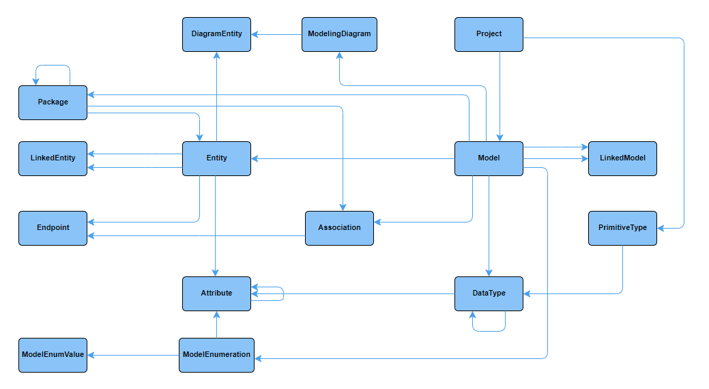
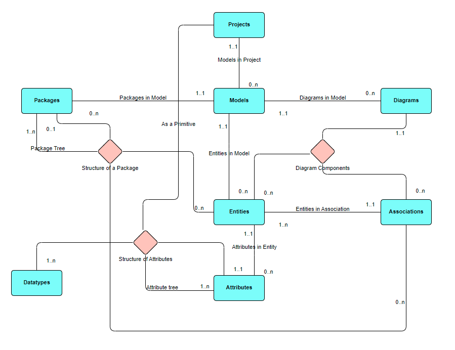
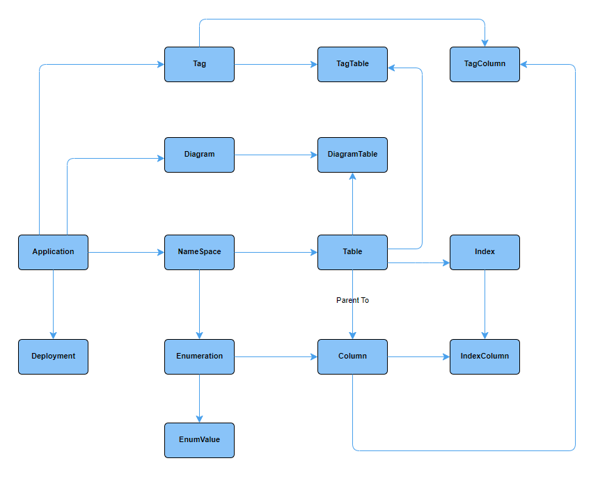
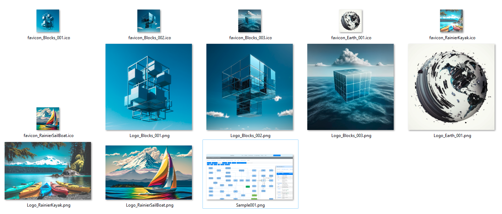

Data Architecture and Modeling with DataWharf - Early Access
 Author: Eric Lendvai
Author: Eric Lendvai
Table of Contents
- Early Access
- Prerequisites
- Introduction
- What makes DataWharf different from other modeling tools?
- Technical Notes
- Installing DataWharf with Docker
- Initial Settings
- Customizing DataWharf
- Setting up Applications and Projects - Planned
- Column/Field Types - Composing
- Custom Fields - Planned
- Setting up and Testing Single Sign On - Planned
- DataWharf Repo and dependency - Planned
- Extending DataWharf with APIs - Planned
- User Access Rights - Planned
- Exporting and Importing Data Dictionaries and Models - Planned
- Monitoring DataWharf
- Installing DataWharf For Development - Planned
Early Access
Since
this article is the primary documentation for the DataWharf
application, it is released before it is complete, and will be updated
as DataWharf evolves as well.
Articles are structured as a
collection of sections. Several incomplete, or not even in progress,
sections will be listed to help you see what are the upcoming topics to
be covered.
DataWharf is available at http://datawharf.org ( which will redirect to https://github.com/EricLendvai/DataWharf ).
Please also review the README.md file displayed as you first visit the repo.
Prerequisites
- Understanding how to setup a FastCGI Harbour web application or use Docker to build and run a container.
- Setup a PostgreSQL database version 14 or above. Even though DataWharf can manage multiple type of SQL backends, it use PostgreSQL itself to store all of its data.
Introduction
There
are many definitions for Data Architecture and Data Modeling. Major
evolution occurred in the domain of data management these last few
decades, and so did the definition of those terms.
Some
of us started our journey in data management using COBOL, which was
created in 1959, and was one of the first computer languages that
introduced the concept or rows and columns.
Starting in 1970 the new concept of data normalization was introduced and refined in the following years.
There
are many articles and books about data normalization, and as an
architect it should be second nature to follow at least the 3rd Normal
Form.
Currently the most common definition for Normalization, Data Architecture and Data Modeling are (Using ChatGPT):
"Normalization
is a technique used to reduce data redundancy and improve data
integrity by organizing data into tables and establishing relationships
between them."
"Data architecture
is a high-level approach that deals with the overall design of data
structures, systems, and processes. It defines the standards, policies,
and practices that govern the collection, storage, retrieval, and use of
data in an organization. Data architecture aims to ensure that data is
managed in a consistent and coherent manner across the organization."
"Data modeling, on the other hand, is a more detailed approach that focuses on creating specific representations of data structures and relationships. It involves the creation of data models, which are diagrams or visual representations of the data elements, their attributes, and the relationships between them. Data modeling helps to clarify the meaning and relationships of data elements, and enables the creation of more accurate and efficient databases".
"Data modeling, on the other hand, is a more detailed approach that focuses on creating specific representations of data structures and relationships. It involves the creation of data models, which are diagrams or visual representations of the data elements, their attributes, and the relationships between them. Data modeling helps to clarify the meaning and relationships of data elements, and enables the creation of more accurate and efficient databases".
Another set
of definitions exists for Conceptual, Logical and Physical data models.
And again we can not find a single precise definitions of those terms.
So here is what I would consider the most up to date definition (Using
ChatGPT):
Conceptual, logical, and physical
data models are different levels of abstraction used to represent data
and information in a structured way.
- Conceptual Data Model: A conceptual data model represents high-level business concepts and their relationships, without getting into the technical details of implementation. It is a conceptualization of the real-world entities and relationships between them. It describes the overall structure of the data, including entities, attributes, and relationships between them, without going into too much detail about the database structure.
- Logical Data Model: A logical data model is a detailed representation of the data and how it is organized in a particular database system. It defines the structure of data elements and their relationships, such as entities, attributes, and relationships between them, and also includes data constraints and business rules. It is a representation of data that is independent of any particular database management system or hardware implementation.
- Physical Data Model: A physical data model specifies the physical implementation of a database on a particular hardware platform, including storage structures, access methods, and security constraints. It represents the actual data structure and how it is stored in the database management system. It includes details such as table structures, indexes, keys, and data types. The physical data model is optimized for performance and storage efficiency, and is specific to a particular database management system and hardware platform.
Up to this point, it
is all theories and definitions. As a long time architects I used to use
Microsoft Visio and some desktop database documentation tool to create
the Conceptual and Logical/Physical models.It was always very difficult
to share diagrams and documentation and to not be concerned about which
version of the models are out there. This became even harder in the
enterprise worlds, when several hundred architects, engineers and
product managers had to cooperate together on multiple projects and
applications.
Starting first as an example of a FastCGI web app, than moved out to its own github repo, I created DataWharf, an enterprise grade web application, that can be used to created Conceptual, Logical and Physical models.
Initially
it was a simple data dictionary tool with some visualization, but then
with help from Thomas Goldschmidt, it became a full modeling tool with
even more advanced visualization and Single Sign On support.
DataWharf has two major sections: Projects and Applications.
A Project in DataWharf,
is collection of Models, conceptual and/or logical. Projects could be
used before applications even exists. Usually a team of architects would
be creating one or more models to design an entire project.
The
Models are made of Entities, Associations, Attributes, Packages,
Datatypes, ... and many of those concepts can be renamed at the level of
a project.
Custom access rights can be managed at the level of projects, and most components of a model can have an unlimited number of custom fields as well.
When using DataWharf to document itself; the following is a physical model of the core tables used to support projects:

And the following is a conceptual model of projects:

The grey zone of conceptual and logical modeling; where one ends and the other begins?
Some people state that a conceptual model should not have defined attributes.
Others that logical models should already represent many to many relationships with actual entities.
DataWharf
will not force the level of details or lack of in your models.
Basically models are to be used to express your intent of your data
structure.
For seasoned architects, models are
used to simplify a physical model, to help during training and to
explain an application, and therefore are sometimes created after the
physical tables already exists.
Sometimes
models are used during the exploration of what an applications should
do, but is that case maintaining the model as the application grows is
recommended.
An Application in DataWharf, is in between a logical and physical model for a single database, represented as an actual Data Dictionary.
But
unlike most data dictionaries, the ones defined in DataWharf are
backend independent, hence the "logical model like" behavior.
The
data dictionary is defined with its own column types, that can be
converted for PostgreSQL, MySQL, MariaDB and MS SQL (currently).
Most
data types will work for any backends. Some data types will be
converted to strings if not supported natively, and to not restrict an
application's implementation, some field types can be PostgreSQL
specific, like arrays.
By the way, using array column types violates the 1st Normal Form (Normalization).
An entire section of this article will describe the mapping for DataWharf column types to all supported backends.
Another concept DataWharf supports are Namespaces,
equivalent to "Schema" in PostgreSQL and MS SQL. MariaDB and MySQL do
not include such concept and therefore if multiple Namespaces exists,
their names will be prepended to the table names.
When using DataWharf to document itself; the following is a physical model of the core tables used to support data dictionaries:

Custom
access rights can be managed at the level of applications, and most
components of a data dictionary can have an unlimited number of custom
fields as well.
Deployments can
also be recorded for each Data Dictionary (Application), making it
easier to compare the specification of a data dictionary with the actual
implementation of them.
For example, an Application could have a Develop, Beta, QA and Production installation.
What makes DataWharf different from other modeling tools?
Most data modeling tools are proprietary desktop applications with potentially expensive monthly and per user licensing fees.
DataWharf is 100% open-source, free, and is a web application
that can be accessed using any modern web browser like Firefox, Chrome,
Safari and any other browser supported by Bootstrap 5+ and jQuery 3+.
- DataWharf can be configured for an unlimited number of users. Project and Application level access rights can be configure for each users.
- DataWharf can also be configured to register new users via Single Sign On.
- Most entities can have an unlimited number of custom fields.
- Multiple tags can be used to flag Tables and Columns, making it even easier to filter down lists.
- Multi text searches can be done on description fields.
- The concept of life cycle and documentation completion exists on most entities.
- Users with the proper access rights, can export and import any Models and Data Dictionary.
- An unlimited number of Diagrams/Visualization can be done for Models and Data Dictionaries. Those diagrams directly related to elements entered in the Models and Data Dictionaries.
- Diagrams are living documents with color coding, tooltips and a detail panel that reflects additional information about any highlighted elements.
- All information in DataWharf has a unique URL, allowing user to include those in any external documentation.
- DataWharf has an API engine that can be enhanced to support any external application.
- Except for passwords, all information stored by DataWharf could be used by accessing its own PostgreSQL database (access rights restrictions to be set by your own DBA).
- DataWharf is also compatible with AWS RDS services.
- Support for CyanAudit can be enabled to track any changes made by any users.
- Easily compare your physical model to actual deployments, or sync/load already existing databases.
- For Harbour developers, an export to a Hash Array ready for use by the Harbour_ORM is available.
Technical Notes
The following is a list of notes specific to DataWharf.
- Names of Namespaces, Tables, Columns, Enumerations, Enumeration Values, Indexes, Tags, Diagrams and all Modeling elements, can be be created by combining lower and upper case letters, but the ordering and uniqueness is case insensitive. Meaning for example, you can not create two Columns in the same Table where they would have the same name regardless of their casing.
- Dots (periods) are not allowed, and will be automatically removed, in Namespaces, Tables, Columns, Enumerations, and Indexes.
Installing DataWharf with Docker
If you plan do develop / enhance or simply run DataWharf locally, install Docker Desktop.
If you are on MS Windows you can use the following article to install Docker Desktop: https://harbour.wiki/index.asp?page=PublicArticles&mode=show&id=221022022831&sig=9123873596
Using GIT to clone the DataWharf repo available at http://datawharf.org (which will redirect you to https://github.com/EricLendvai/DataWharf)
If you don't already have access to a PostgreSQL server, install version 14 or above on your local machine.
Create an empty database "DataWharfDemo" for example.
Create an empty database "DataWharfDemo" for example.
There are two methods to run DataWharf with Docker:
- Run as pre-built / pre-compiled web application
- Run by compiling locally and for the purpose of enhancing/extending DataWharf
The first method (pre-built) will use a base image of DataWharf always up to date from DockerHub.
Update
the file "config_demo.txt" with PostgreSQL connection and login
information to the "DataWharfDemo" database created earlier.
Run the following Docker commands from the root folder of your local repo:
docker build . -f Dockerfile_Demo_Using_DockerHub_Ubuntu_22_04 -t datawharf_demo_using_dockerhub_baseimage:latestdocker run -d -p 8080:80 datawharf_demo_using_dockerhub_baseimage:latest
Open a browser to "http://localhost:8080"
The initial login ID is "main" and the password is "password".
Once you logged in, to see DataWharf's own data dictionary use the following steps:
1. Go to "Settings" and add an "Application", "DataWharf".
2. Go to "Data Dictionary", select "DataWharf", use the "Import" option, and from the repo use the latest ExportDataDictionary_DataWharf_*.zip.
You can do the same for "Projects" and "Models" by using ExportModel_DataWharf_Design-Projects_*.zip
Expended instructions are also available at https://github.com/EricLendvai/DataWharf/blob/main/README.md
The second method (local compilation) will allow you to compile directly in Windows or Docker, via Dev Containers.
If you are using Mac OS, currently, you will need to use Dev Containers.
Some features, like SSO (Single Sign On) will only function while running in Linux, meaning Docker.
If you intend to develop on Windows natively, use the following article to setup your local environment: https://harbour.wiki/index.asp?page=PublicArticles&mode=show&id=190401174818&sig=6893630672
All the instructions for developing DataWharf are requiring the use if VSCode.
Regardless if you develop in Windows or Docker (Ubuntu), please install the following two VSCODE extensions:
1. aperricone.harbour
2. actboy168.tasks
Developing DataWharf will also required to clone the following repos locally:
1. Harbour_FastCGI
2. Harbour_VFP
3. Harbour_ORM
Please update your local .devcontainer/devcontainer.json file to mount those repos inside your dev container.
The initial login ID is "main" and the password is "password".
Once you logged in, to see DataWharf's own data dictionary use the following steps:
1. Go to "Settings" and add an "Application", "DataWharf".
2. Go to "Data Dictionary", select "DataWharf", use the "Import" option, and from the repo use the latest ExportDataDictionary_DataWharf_*.zip.
You can do the same for "Projects" and "Models" by using ExportModel_DataWharf_Design-Projects_*.zip
Expended instructions are also available at https://github.com/EricLendvai/DataWharf/blob/main/README.md
The second method (local compilation) will allow you to compile directly in Windows or Docker, via Dev Containers.
If you are using Mac OS, currently, you will need to use Dev Containers.
Some features, like SSO (Single Sign On) will only function while running in Linux, meaning Docker.
If you intend to develop on Windows natively, use the following article to setup your local environment: https://harbour.wiki/index.asp?page=PublicArticles&mode=show&id=190401174818&sig=6893630672
All the instructions for developing DataWharf are requiring the use if VSCode.
Regardless if you develop in Windows or Docker (Ubuntu), please install the following two VSCODE extensions:
1. aperricone.harbour
2. actboy168.tasks
Developing DataWharf will also required to clone the following repos locally:
1. Harbour_FastCGI
2. Harbour_VFP
3. Harbour_ORM
Please update your local .devcontainer/devcontainer.json file to mount those repos inside your dev container.
Initial Settings
DataWharf
use a PostgreSQL database to store all of its own information.
Currently around 50 tables are maintained by DataWharf. You only need to
create an empty database, point to it, and the DataWharf web app will
create and maintain all of its own tables, including dealing with its
own schema migrations.
DataWharf is a
self contained FastCGI executable. Wherever it is installed, you need to
create or simply update a config.txt file.
The config.txt file is simply a list of name/value entries, one per line.
The
names are defined by DataWharf, and the values can be entered directly
or as a reference to environment variables, see example at line 8
Here is an example of a config.txt with the description of each possible settings.
ReloadConfigAtEveryRequest=true //"true" or "false". If false the web server or at least the FastCGI executable needs to be restarted for settings changes to be detected.MaxRequestPerFCGIProcess=0 //0 for Unlimited.POSTGRESPORT=5432 //Useful if installing multiple versions of PostgreSQL.POSTGRESHOST=localhost //Could also refer to an AWS RDS, host.docker.internal (if using docker and accessing PostgreSQL server of host OS.POSTGRESID=datawharf //PostgreSQL User id.POSTGRESPASSWORD=${DataWharf_Database_Password} //Password for POSTGRESID. Instead of entering the password as plain text, you can specify the name of an environment variable POSTGRESDATABASE=DataWharf //Database NamePOSTGRESDRIVER=PostgreSQL ODBC Driver(UNICODE) //ODBC Drive name might be different depending of ODBC client version or OS used.ShowDevelopmentInfo=No
Customizing DataWharf
There
are multiple customization that can be done to DataWharf. Since
DataWharf is an open-source project, you are free to modify as you
desire.
But most users/companies will only need to make minor
changes to rebrand / customize DataWharf, and all of this can be done by
editing a config.txt file, or possibly datawharf.ch
Please refer to the previous section to see an example of a config.txt file.
To
rebrand DataWharf, meaning renaming it something your company would
identify with, or if you have multiple instance of DataWharf and want to
make it obvious which one you are accessing, update the
"APPLICATION_TITLE" setting.
If you want to
change the background color of the top navigation bar, or change the
text from black to white, set the following two settings:
- "COLOR_HEADER_BACKGROUND" A RGB color as set via hex values (standard html color setting).
- "COLOR_HEADER_TEXT_WHITE" Yes or No.
To change the logo image and picture used on the home page, set the follow setting:
- "LOGO_THEME_NAME" A name of a pair of image files in the "images" folder under the "website" folder.
The
web sites favicon (also known as a shortcut icon) is the file
named as "favicon_<LOGO_THEME_NAME>.ico" (64x64
pixels)
The logo in the navigation bar, and the image on the
home page is the file named as"Logo_<LOGO_THEME_NAME>.png"
(1024x1024 pixels)
A few sets of images files are provided in the repo. Add your own images with the same file name structure if needed.
The
following is a view of what is available by default. These were
generated using "midjourney", an AI service that generates images based
on some text prompts. These were generate using the paid service, and I
(Eric Lendvai) grant use of them to the public when used for any
deployment of DataWharf.

The
"datawharf.ch" file, located in the "src" folder will have some default
settings and settings used to set colors of elements used in diagrams.
Editing that file will require a recompilation, since it behaves as an .h file for programs written in C.
DataWharf
is written using the Harbour computer language, which in turn is
converted to pure C code. For more information about Harbour, go to the
web site https://harbour.wiki
Setting up Applications and Projects - Planned
Column/Field Types - Composing
As mentioned in the introductions, DataWharf has its own datatypes (actually from the Harbour_ORM repo)
| Type Code | Type Name | Length | Decimals | PostgreSQL Field Type | MariaDB and MySQL Field Type | Warnings/Notes |
| I | Integer | integer | INT | |||
| IB | Big Integer | bigint | BIGINT | |||
| Y | Money (4 decimal) | money | DECIMAL(13,4) Comment field: 'Type=Y' | |||
| N | Numeric | X | X | numeric(<len>,<dev>) | DECIMAL(<len>,<dev>) | |
| C | Char | X | character(<len>) | CHAR(<len>) | Uses UTF8 encoding | |
| CV | Variable length char (with max length value) | X | character varying(<len>) | VARCHAR(<len>) | Uses UTF8 encoding | |
| B | Binary (Same as "R") | X | bytea Comment field: 'Type=B|Length=<len>' | BINARY(<len>) | No code page/encoding. | |
| BV | Variable length Binary (Sace as "R" with max length value) | X | bytea Comment field: 'Type=BV|Length=<len>' | VARBINARY(<len>) | No code page/encoding. | |
| M | Longtext (memo) | text | LONGTEXT | Uses UTF8 encoding | ||
| R | Long blob (binary) (Same as "B") | bytea | LONGBLOB | |||
| L | Logical | boolean | TINYINT(1) | |||
| D | Date | date | DATE | |||
| TOZ | Time with time zone | time with time zone or time(<dec>) with time zone | TIME or TIME(<dec>) Comment field: 'Type=TOZ' | |||
| TO | Time without time zone | time without time zone or time(<dec>) without time zone | TIME or TIME(<dec>) | |||
| DTZ | Date Time with time zone | timestamp with time zone or timestamp(<dec>) with time zone | TIMESTAMP or TIMESTAMP(<dec>) | |||
| DT or T | Date Time without time zone | timestamp without time zone or timestamp(<dec>) without time zone | DATETIME or DATETIME(<dec>) | |||
| UUI | UUID (Universally Unique Identifier) | uuid | VARCHAR(36) Comment field: 'Type=UI' | MySQL/MariaDB36 Character Length (32 digits and 4 dashes). PostgreSQL requires pgcrypto extension to be installed. | ||
JS | JSON | json | LONGTEXT Comment field: 'Type=JS' | |||
| OID | Object Identifier | oid | BIGINT COMMENT 'Type=OID' |
Notes:
- In PostgreSQL a "bit" type also exists, which is a string series for "0" and "1", not the Binary type. For now we do not support the field type.
- On PostgreSQL to allow the generation of UUID values, install the extension "pgcrypto".
Custom Fields - Planned
Setting up and Testing Single Sign On - Planned
DataWharf Repo and dependency - Planned
Extending DataWharf with APIs - Planned
User Access Rights - Planned
Exporting and Importing Data Dictionaries and Models - Planned
Monitoring DataWharf
Simply
access the /heath web page to see if your instance of DataWharf is
running and to review the versions of several of its components.
Additionally, check the table ORM.SchemaAndDataErrorLog to see review any errors created by the application itself.
The following is an example of the information provided by the /health page.
{ "message": "OK", "zulu_time": "2023-04-19T09:03:14.501Z", "application_version": "2.53", "data_schema_version": "20", "build Info": { "datawharf": "mingw64 release 04/19/2023 2:02:45.90", "harbour_orm": "mingw64 release 02/17/2023 2:09:56.08", "harbour_vfp": "mingw64 release 02/17/2023 2:09:50.19" }, "data_server": "PostgreSQL 14.5, compiled by Visual C++ build 1914, 64-bit"}
Installing DataWharf For Development - Planned
The browser did not close this tab. It may have been opened directly instead of from the Articles list. Use Back to Articles.